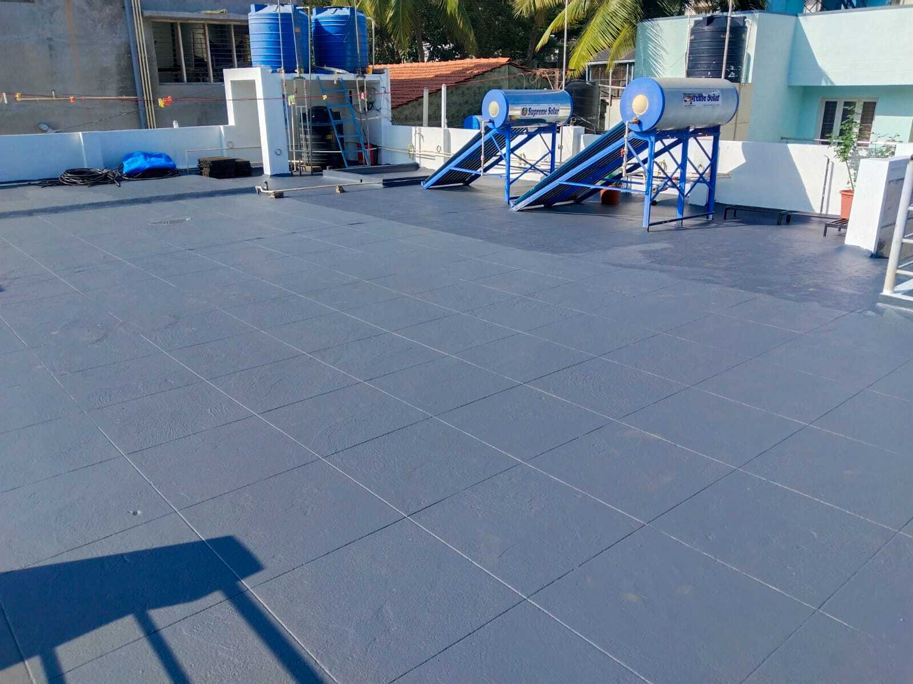
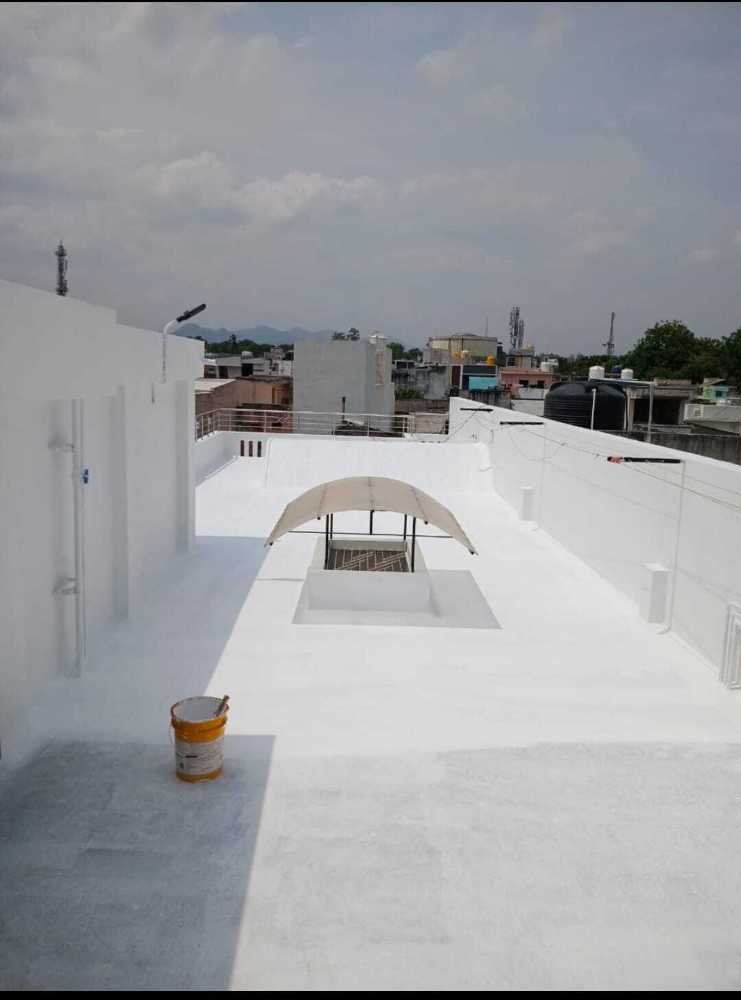
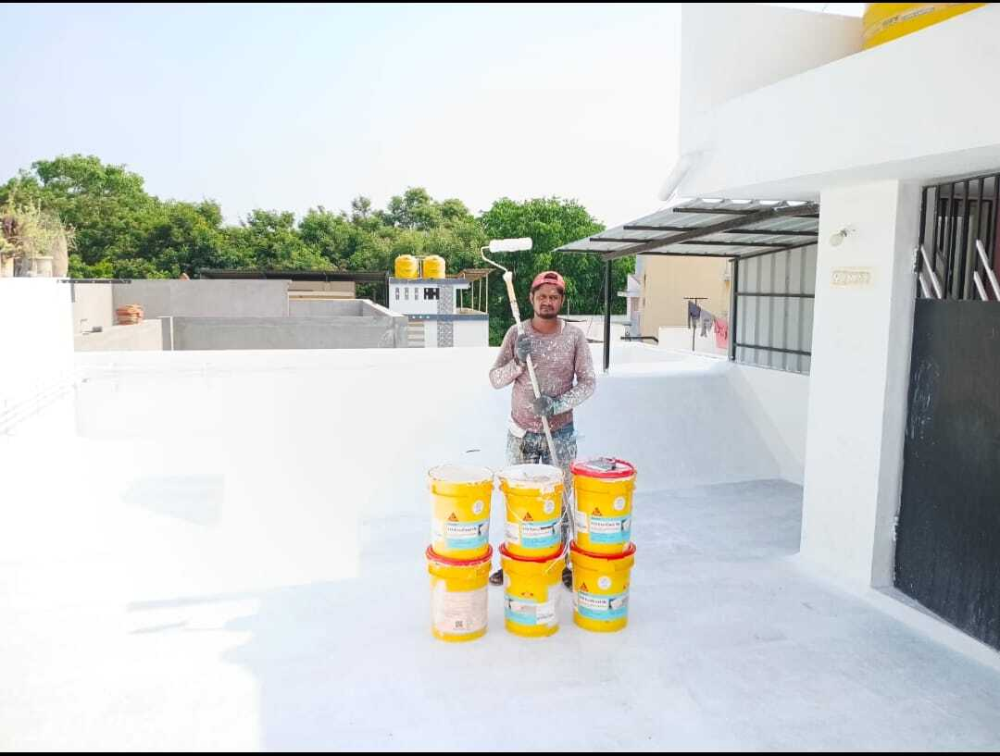
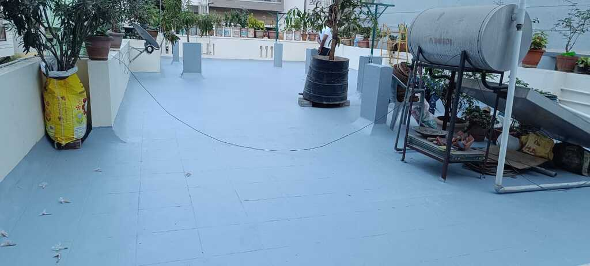
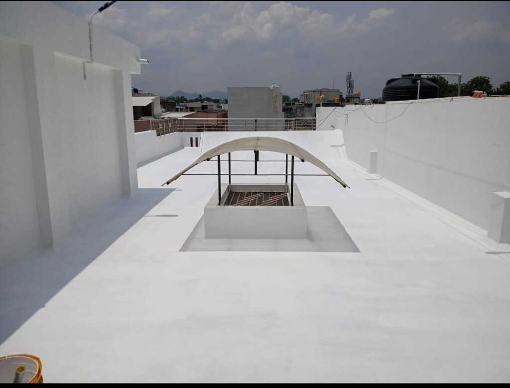

All 7 services with original content, rewritten for clarity. Same materials & methods as current site.

Terrace leakage is most common in Bangalore monsoon. We clean surface, repair cracks, strengthen weak areas and apply high-quality coatings/membranes. No slab seepage, no damp patches, leak-free for years.

Continuous water exposure causes lower-floor seepage. Durable chemical coats, cementitious applications & joint sealing protect tiles, flooring & slab. Moisture-free, no paint peeling below.

Monsoon + drainage cause dampness & bubbling paint. Specialised exterior-grade coatings, gap filling, weatherproof layers withstand sun, rain, dust. Prevents internal dampness, improves exterior life.

Soil moisture causes fungus, cracks & weakness. Membrane layers, chemical treatments & pressure-resistant coatings block groundwater. Dry, safe basement, parking & storage protection.

Tanks must be leak-proof to prevent contamination. Cleaning, damage repair, food-grade safe materials. Stops cracks, seepage through walls, clean stored water, longer tank life.

Rainwater enters through joints/edges causing damp stains. Seals gaps, fixes slope, protects balcony surface. Dry indoors, ideal for apartments with strong rainfall.
Small cracks become major leaks. Root-cause diagnosis, polyurethane/epoxy/polymer-modified mortar, permanent sealing. No penetration through walls/ceilings/slabs.